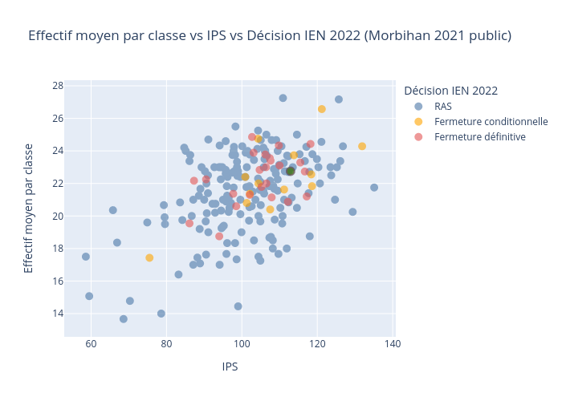

Analyse des effectifs scolaires
Table des matières
- 1. Introduction
- 2. Présentation des données
- 3. Analyses au niveau national
- 4. Analyses au niveau morbihan
- 4.1. morbihan_effectif_nb_classes_rep_annee
- 4.2. morbihan_effectif_nb_classes_secteur_annee
- 4.3. morbihan_effectif_ips_nb_classes_annee
- 4.4. morbihan_effectif_ips_nb_classes_2021
- 4.5. morbihan_effectif_ips_5_10_2021
- 4.6. morbihan_effectif_ips_statut_ien_2021
- 4.7. morbihan_effectif_ips_5_10_statut_ien_2021
- 5. Analyses au niveau séné
- 6. Annexes
| Date | 13 févr. 2023 |
| Version | 1.0 |
1. Introduction
2. Présentation des données
Les analyses présentées dans ce document ont été réalisées à partir des données mise en opendata par l'Éducation Nationales : https://data.education.gouv.fr/pages/explore-portal/
Deux jeux de données ont été utilisés :
2.1. Données effectifs
Effectifs d’élèves par niveau et nombre de classes par école – Date d’observation au début du mois d’octobre chaque année.
Source : DEPP, Ministère de l’Éducation Nationale, de la Jeunesse et des Sports, DEPP
Champ : établissements publics et privés sous contrat, métropole et DOM
Abréviations utilisées : REP : Réseau d’Éducation Prioritaire REP+ : Réseau d’Éducation Prioritaire Plus ULIS : Unités Localisées pour l'Inclusion Scolaire
2.2. Données IPS
L’indice de position sociale (IPS) permet d'appréhender le statut social des élèves à partir des professions et catégories sociales (PCS) de leurs parents. Pour chaque PCS, la valeur numérique de l’IPS correspond à un résumé quantitatif d’un ensemble d’attributs socio-économiques et culturels liés à la réussite scolaire.
Concrètement, pour déterminer les valeurs associées à chaque PCS, nous avons considéré la moyenne pondérée de caractéristiques telles que les diplômes, les pratiques culturelles, les conditions matérielles, le capital culturel et l’implication des parents dans la scolarité. Cette méthodologie statistique est décrite dans l’article de Rocher (2016) et s’appuie sur une méthode d’analyse de données (analyse des correspondances multiples) réalisée à partir du panel de la DEPP d’élèves entrés en sixième en 2007. Les valeurs de référence de l’IPS sont disponibles pour chaque PCS et pour chaque croisement de PCS (mère-père), cf. Rocher (2016).
Ainsi, dès lors que les PCS des parents ont été recueillies, il suffit d'appliquer les valeurs de référence de l’IPS. Le niveau social d'un établissement scolaire est apprécié à travers le calcul de la moyenne des IPS des élèves qui y sont scolarisés.
Il convient de rappeler que, comme tout indice synthétique, il s’agit d’un résumé simplifié de la réalité, qui ne peut rendre compte à lui seul de la complexité de la situation socio-économique et culturelle des élèves accueillis dans un établissement.
Enfin, l’IPS étant basé sur les PCS déclarées par les familles et enregistrées par les établissements, il est soumis à une certaine marge d’erreur : ainsi, il est conseillé de ne pas sur-interpréter des différences de 3 points ou moins concernant les IPS moyens des écoles.
Champ : Le fichier fournit les IPS moyens des écoles de France métropolitaine et des DROM, publiques et privées sous contrat, calculés à partir des données de la rentrée N.
Le calcul des IPS des écoles est effectué à partir des élèves de CM2, dont on connaît les PCS lorsqu’ils sont en 6ème. Il correspond plus exactement à la moyenne de l’IPS des anciens élèves de l’école sur les cinq dernières années. En outre, les IPS sont fournis uniquement pour les écoles ayant eu au moins 25 élèves de CM2 sur les cinq dernières années. De ce fait les écoles maternelles sont exclues du champ puisqu’elles n’ont pas d’élèves de CM2.
Dans le fichier mis à disposition, chaque ligne correspond à une école pour une année scolaire donnée.
Modifications : un premier fichier sur l’IPS des écoles a été déposé le 05/10/2022. Il présentait l’IPS des écoles ayant eu plus de 5 élèves de CM2 sur les cinq dernières années.
Référence :
Rocher, T. (2016). Construction d’un indice de position sociale des élèves. Éducation & formations, DEPP, 90, pp.5-27.
3. Analyses au niveau national
3.1. national_effectif_nb_classes_rep_annee
Objectif de l'analyse :
Données utilisées : effectifs
Supports de l'analyse :
- Figure
Note de lecture :
Observations :
Figure 1 : source.
3.2. national_effectif_nb_classes_secteur_annee
Objectif de l'analyse :
Données utilisées : effectifs
Supports de l'analyse :
- Figure
Note de lecture :
Observations :

Figure 2 : source.
3.3. national_effectif_ips_nb_classes_annee
Objectif de l'analyse :
Données utilisées : effectifs
Supports de l'analyse :
- Figure
Note de lecture :
Observations :
Figure 3 : source.
4. Analyses au niveau morbihan
4.1. morbihan_effectif_nb_classes_rep_annee
Objectif de l'analyse :
Données utilisées : effectifs
Supports de l'analyse :
- Figure
Note de lecture :
Observations :

Figure 4 : source.
4.2. morbihan_effectif_nb_classes_secteur_annee
Objectif de l'analyse :
Données utilisées : effectifs
Supports de l'analyse :
- Figure
Note de lecture :
Observations :

Figure 5 : source.
4.3. morbihan_effectif_ips_nb_classes_annee
Objectif de l'analyse : Analyser la répartition en termes d'effectifs moyens et d'IPS des écoles du Morbihan entre les rentrées 2019 et 2021.
Données utilisées : effectifs
Supports de l'analyse :
- Figure
Note de lecture :
- Chaque point représente un établissement.
- La couleur des points indique si l'école est du secteur public ou privé.
Observations :

Figure 6 : source.
4.4. morbihan_effectif_ips_nb_classes_2021
Objectif de l'analyse : Analyser la répartition en termes d'effectifs moyens et d'IPS des écoles du Morbihan en 2021.
Données utilisées : effectifs
Supports de l'analyse :
- Figure
Note de lecture :
- Chaque point représente un établissement.
- La couleur des points indique si l'école est du secteur public ou privé.
- Le point vert représente Dolto.
Observations :

Figure 7 : source.
4.5. morbihan_effectif_ips_5_10_2021
Objectif de l'analyse : Analyser la répartition en termes d'effectifs moyens et d'IPS des écoles du Morbihan ayant entre 5 et 10 classes en 2021.
Données utilisées : effectifs
Supports de l'analyse :
- Figure
Note de lecture :
- Chaque point représente une école.
- La couleur des points indique si l'école est du secteur public ou privé.
- Le point vert représente Dolto.
Observations :
Figure 8 : source.
4.6. morbihan_effectif_ips_statut_ien_2021
Objectif de l'analyse : Analyser les décisions de fermetures de classe de l'IEN en février 2023 en termes d'effectifs moyens et d'IPS des écoles du Morbihan en 2021.
Données utilisées : effectifs
Supports de l'analyse :
- Figure
Note de lecture :
- Chaque point représente un école.
- La couleur des points représente les décisions de fermeture de l'IEN en février 2023.
- Le point vert représente Dolto.
Observations :

Figure 9 : source.
4.7. morbihan_effectif_ips_5_10_statut_ien_2021
Objectif de l'analyse : Analyser les décisions de fermetures de classe de l'IEN en février 2023 en termes d'effectifs moyens et d'IPS des écoles du Morbihan ayant entre 5 et 10 classes en 2021.
Données utilisées : effectifs
Supports de l'analyse :
- Figure
Note de lecture :
- Chaque point représente une école.
- La couleur des points représente les décisions de fermeture de l'IEN en février 2023.
- Le point vert représente Dolto.
Observations :
Figure 10 : source.
5. Analyses au niveau séné
5.1. séné_effectif_nb_classes_rep_annee
Objectif de l'analyse :
Données utilisées : effectifs
Supports de l'analyse :
- Figure
Note de lecture :
Observations :

Figure 11 : source.
5.2. séné_ips_annee
Objectif de l'analyse :
Données utilisées : effectifs
Supports de l'analyse :
- Figure
Note de lecture :
Observations :

Figure 12 : source.
6. Annexes
6.1. Environnement technique
Les librairies Python utilisées dans les traitements présentés dans ce document sont :
| Library | Version |
|---|---|
| Pandas | 1.4.4 |
| Plotly | 5.10.0 |